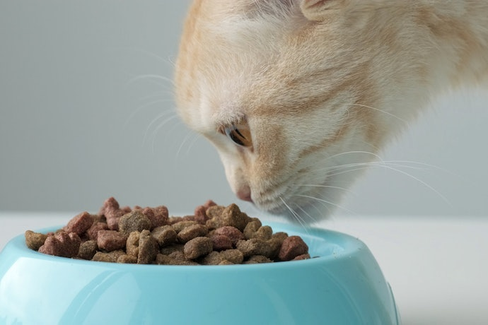
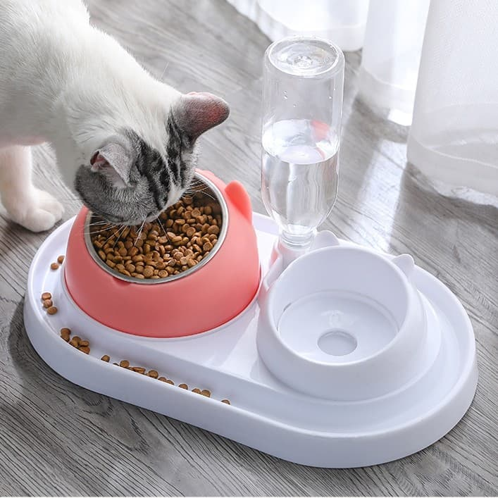
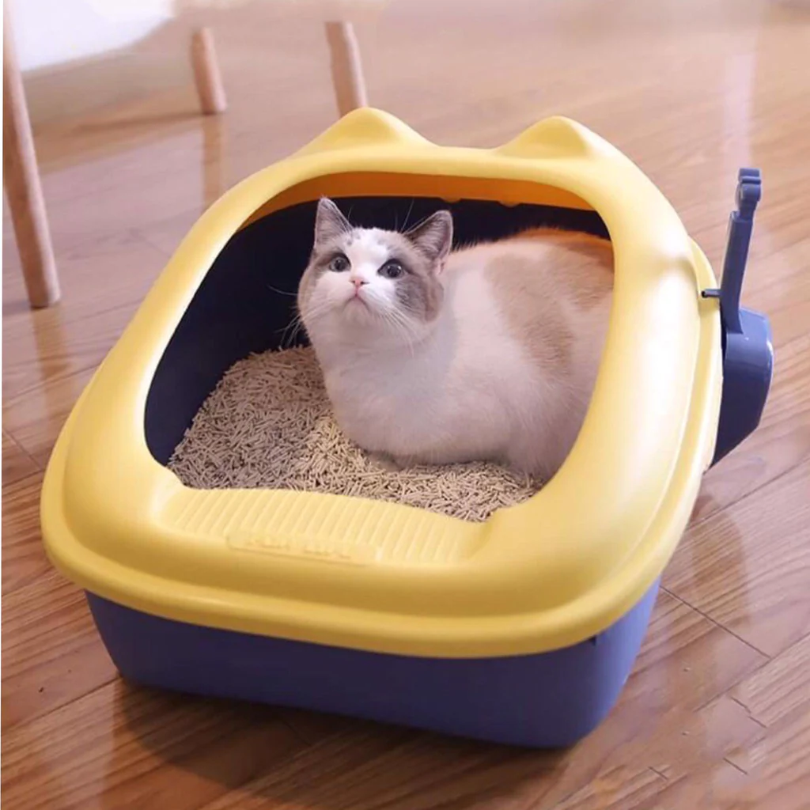
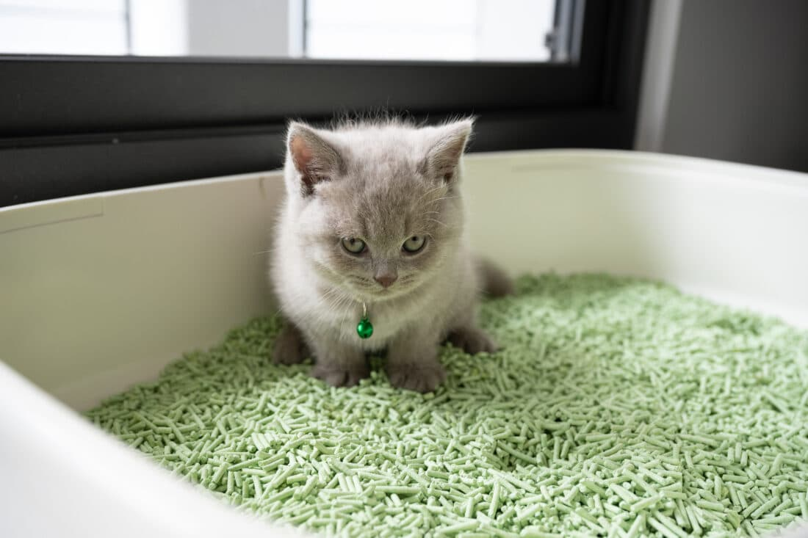
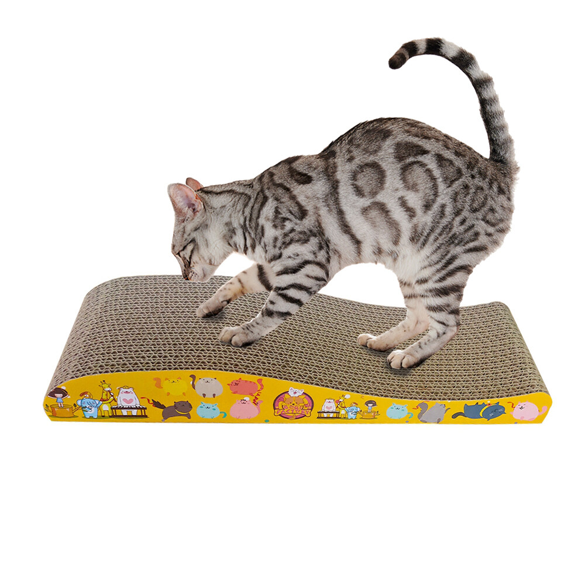
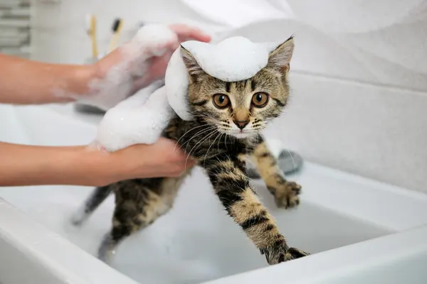
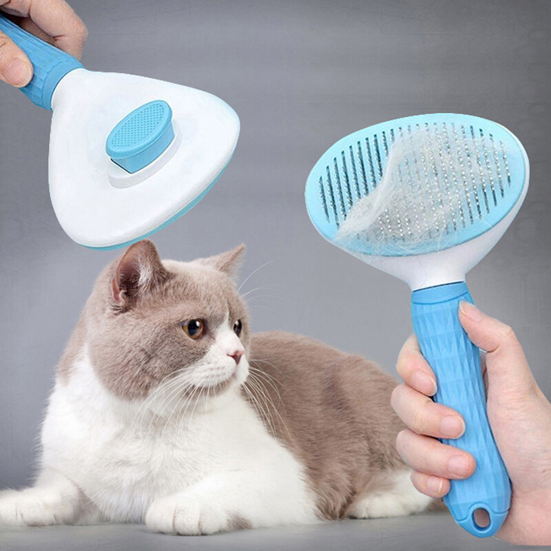
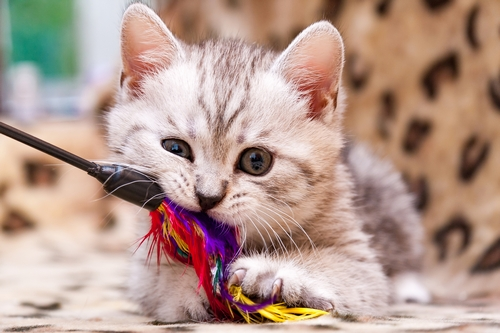
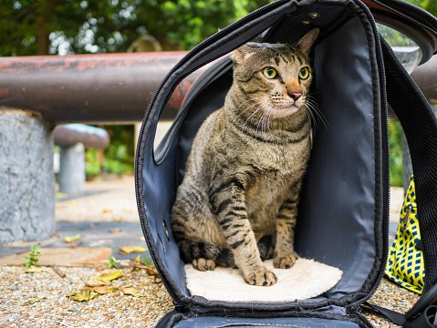

อาหารคือสิ่งจำเป็นที่สุดสำหรับน้องแมว ควรเลือกอาหารคุณภาพสูงที่เหมาะสมกับช่วงวัยและความต้องการเพื่อให้น้องแมวมีสุขภาพร่างกายที่สมบูรณ์แข็งแรง เจริญเติบโตสมวัย


ควรเลือกชามที่ผลิตจากวัสดุที่ปลอดภัย สามารถล้างทำความสะอาดได้ง่าย เช่น ชามเซรามิค หรือ ชามสแตนเลส
ควรเลือกกระบะทรายที่น้องแมวสามารถเข้าออกได้สะดวก มีขนาดเหมาะสมกับขนาดตัวของน้องแมว ซึ่งขนาดที่เหมาะสมคือ น้องแมวสามารถหมุนรอบตัวได้เมื่ออยู่ในนั้น


ทรายแมวมีหลากหลายแบบให้เลือกมากมาย ทั้งแบบจับตัวเป็นก้อนเร็ว ลดกลิ่น ไร้ฝุ่น หรือแบบทำจากวัสดุธรรมชาติที่ย่อยสลายได้ แต่ไม่ว่าจะเลือกใช้สูตรไหนก็ตาม ควรทำความสะอาดกระบะทรายและเปลี่ยนทรายแมวเป็นประจำ
น้องแมวมีสัญชาตญาณนักล่าอยู่ในตัว จึงเป็นเรื่องปกติที่พวกเค้าจะลับเล็บให้คมอยู่เสมอ แต่ถ้าปล่อยให้น้องแมวลับเล็บกับเฟอร์นิเจอร์ในบ้านคงไม่ดีแน่ ควรจัดเตรียมที่ลับเล็บแมวไว้เพื่อให้น้องๆได้ลับเล็บถูกที่ และยังช่วยให้น้องๆได้ออกกำลังกายไปในตัวอีกด้วย


โดยปกติน้องแมวจะเลียขนทำความสะอาดตัวเองเป็นประจำอยู่แล้ว แต่การทำความสะอาดด้วยแชมพูสำหรับแมวก็จะช่วยให้น้องแมวตัวสะอาดมากยิ่งขึ้น นอกจากนี้ ยังมีสูตรต่างๆที่ตอบโจทย์ความต้องการโดยเฉพาะ เช่น สูตรบำรุงขนให้นุ่มสวยเงางาม สูตรลดขนร่วง หรือแชมพูโฟมแห้งสำหรับน้องแมวที่ป่วยหรือไม่ชอบน้ำ
หวีและแปรงขนก็สำคัญไม่แพ้กัน แปรงสลิคเกอร์สามารถช่วยแก้ขนพันกันและกำจัดขนที่ตายแล้ว ส่วนแปรงซิลิโคนเหมาะสำหรับผิวบอบบางและยังช่วยนวดผ่อนคลาย


ของเล่นช่วยให้น้องแมวรู้สึกผ่อนคลายและได้ขยับเคลื่อนไหวร่างกาย การเล่นกับน้องแมวยังช่วยสร้างสายสัมพันธ์ที่ดีระหว่างกันอีกด้วย
ใช้สำหรับพาน้องแมวไปข้างนอก ไม่ว่าจะเดินทางไปเที่ยวหรือไปหาคุณหมอ การให้น้องอยู่ในกรงขณะเดินทางจะช่วยให้น้องแมวรู้สึกปลอดภัย กรงหิ้วหรือกระเป๋าเดินทางที่เหมาะสมควรมีช่องระบายให้อากาศถ่ายเทสะดวก อยู่สบาย ไม่อึดอัด
